【匆匆那些年】总结个人博客经历的这四年…
【匆匆那些年】总结个人博客经历的这四年… 分享我的个人博客访问量如何做到IP从10到600的...
分享我的个人博客访问量如何做到IP从10到600的... 如果要学习web前端开发，需要学习什么？
如果要学习web前端开发，需要学习什么？
国外html5模板 个人博客模板博客模板
-
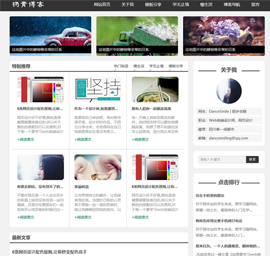html5个人博客模板主题《...因其颜色主要是黑白搭配,重点突出的是文字内容,就像是一个颇有内涵的绅士.所以此模板主题为《绅士》,...下载模板
-
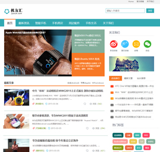html5时尚个人博客模板-... 这个是功能很全的html5个人博客模板,焦点图动态展示,增加了站内搜索,微信关注.侧栏使用了颜色标签,使...下载模板
-
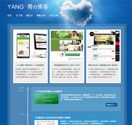html5个人博客模板主题《...Html5+css3个人博客模板，主题《心蓝时间轴》，使用css3技术实现网站动画效果，主要模块是时间轴部分...下载模板
-
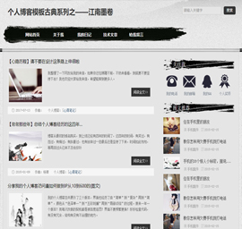个人博客模板古典系列之...一共是四个页面，首页，图文列表，图片列表，文字内容。此模板风格为中国古典风格，山水画墨迹成就一...下载模板
-
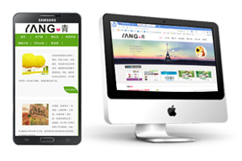个人博客《草根寻梦》―...把帝国7.0系统升级到最新版本7.2，7.2版本主要是增加了一个多终端的功能，于是琢磨着做一个手机模板出...下载模板
-
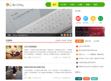【活动作品】柠檬绿兔小...展示的是首页html，博客页面布局格式简单，没有复杂的背景，色彩局部点缀，动态的幻灯片展示，切换卡...下载模板
最新文章
-
别让这些闹心的套路，毁了你的网页设计
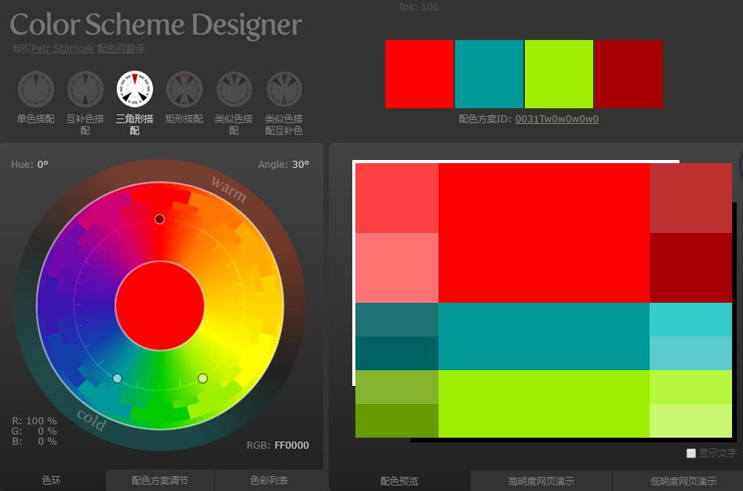网页设计和做人一样，需要少一些套路，多一些真诚。那么下面就为大家揭穿那些看似好用，但用户体验并不好的设计模式。另外再附上解决办法，避免网页设计中出现这些问题。...
-
帝国cms自动设置标题图片选用文章第一张图片
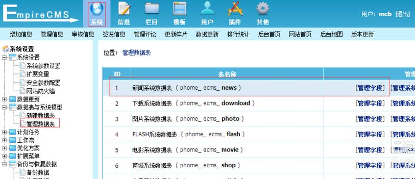帝国cms设置默认自动选取第一张上传图为标题图片,很多时候需要添加一个单独的标题图片并没有那么多的时间。这里告诉大家一个最简单的添加标题图片的方法。
首先打开帝国cm... -
帝国cms关键词和tags标签自动同步方法
帝国cms怎么让tags标签同步网站设置的关键词?大家肯定都发现了一个问题：网站安装完帝国cms后，后台默认是关键词和Tags标签不同步的，简单的来，发布文章的时候在关键词处填...
-
十条设计原则教你学会如何设计网页布局!
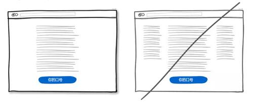网页常见的布局有很多种,单列布局,多列布局.其中单列布局是国外很多网站比较常用的.咱们很多站长以及门户网站都使用的是是两列布局,很少用三列布局的.下面我来分享下我们常用的网页布局格式以及设计技巧....
-
html5个人博客模板主题《绅士》
-
用js+css3来写一个手机栏目导航
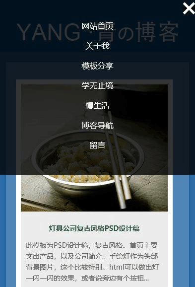有些站长说想做一个手机适应的网站,但是导航太难了,如果要使用框架的话,代码非常多,冗余.再用dreamwear打开,那直接就不响应了.我一直都喜欢用简单的代码来实现,js,css3利用的好,同样可以做出好看实用的导航,关键是代码极少.现在我把步骤分享出来...
-
6条网页设计配色原则,让你秒变配色高手

网页设计好不好看,颜色是毋庸置疑要排首位的,所以关于颜色的搭配技巧以及原则,对于每一个要学习web前端设计的新手来说,这都是一个重要的学习过程.在本教程中我们将与你分享...
-
作为一个设计师,如果遭到质疑你是否能恪守自己的原则?

就拿我自己来说吧，有时候会很矛盾，设计好的作品，不把它分享出来，会觉得待在自己电脑里面实在是没有意义。干脆就发布出去吧。我也害怕收到大家不好的评论，有些评论，可能说者无意，但是对于每一个用心的站长来说，都会受很深的影响，愤怒，恼羞。...
-
Come on,行动起来吧!我们和时间来一场赛跑!

时间过得那么飞快,使我的小心眼儿里不只是着急,还有悲伤.有一天,我放学回家,看到太阳快落山了,就下决心说:"我要比太阳更快地回家."我狂奔回去,站在庭院前喘气的时候,看到太...
-
野草云怎么样？香港CN2 VPS，美国CERA VPS，香港虚拟主机
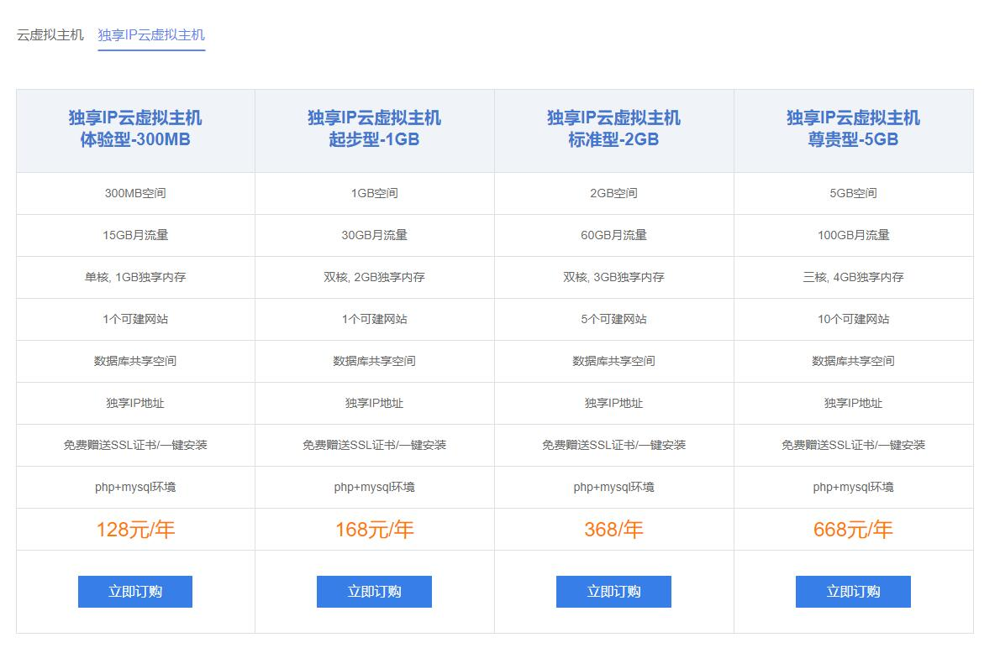许多小伙伴都愁于建站备案等一系列繁琐的事情,加上等待周期较长,至少都要十天左右,所以选择了国外空间.前段时间有一网友要做模板,着急马上就要做好,他说他要买香港空间,我还挺担心他选择香港空间,会影响传数据什么的.结果后来事实证明,我的担心是多余的....
-
帝国cms7.5更新完毕
虽然我觉得没有太大的改变,但是应该更安全了,还没有更新的小伙伴赶紧更新了,记得数据库备份哦...
-
或许换一个活法,能让你走出阴霾
前段时间回成都,去见了几年未见的老友.一起吃了饭,还带我家宝宝去玩.我问她为什么这么久都还没有打算要孩子,她说,她有一段时间患上了忧郁症,很长的时间才走出来,我听她这么说,我都很惊讶!想问问她原因,可见她欲言又止的神情,我便不再主动问她.就听着她慢慢的说.其实主要的原因还是源自于工作和家庭,工作压力大,每天的程序代码,上级不停的催,她甚...
-
html5时尚个人博客模板-技术门户型
-
如何导入帝国模板组
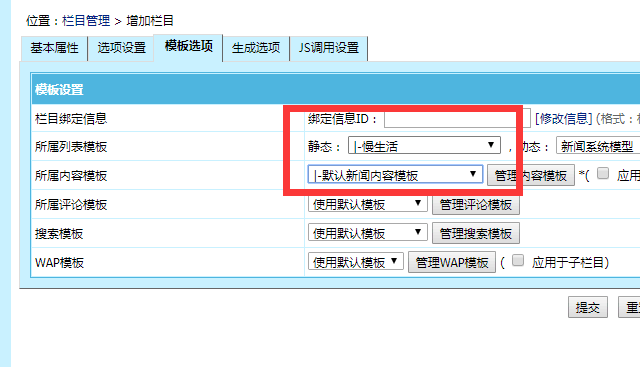1、下载模板组2、上传html文件夹到skin文件夹里面，然后重命名html文件夹，改成20173、进入后台-模板-模板组管理-导入/导出模板组(a)导入模板组,选择文件(b)模板编码目前是...
关于我

网名：dancesmile | 杨青
职业：Web前端设计师、网页设计
个人微信：yangqq_1987
邮箱：dancesmiling@qq.com
点击排行
- 【活动作品】柠檬绿兔小白个人博客模板30...
展示的是首页html，博客页面布局格式简单，没有复杂的背景，色彩局部点缀，动态的幻灯片展示，切换卡，标...
- 个人博客模板（2014草根寻梦）30...
2014第一版《草根寻梦》个人博客模板简单、优雅、稳重、大气、低调。专为年轻有志向却又低调的草根站长设...
- 黑色质感时间轴html5个人博客模板30...
黑色时间轴html5个人博客模板颜色以黑色为主色，添加了彩色作为网页的一个亮点，导航高亮显示、banner图片...
- 情侣博客模板系列之《回忆》Html30...
Html5+css3情侣博客模板，主题《回忆》，使用css3技术实现网站动画效果，主题《回忆》,分为四个主要部分，...
- 黑色Html5个人博客模板主题《如影随形》30...
014第二版黑色Html5个人博客模板主题《如影随形》，如精灵般的影子会给人一种神秘的感觉。一张剪影图黑白...
- 【匆匆那些年】总结个人博客经历的这四年…30...
博客从最初的域名购买，到上线已经有四年的时间了，这四年的时间，有笑过，有怨过，有悔过，有执着过，也...

站长推荐
- 十条设计原则教你学会如何设计网页布局!30...
网页常见的布局有很多种,单列布局,多列布局.其中单列布局是国外很多网站比较常用的.咱们很多站长以及门户...
- html5个人博客模板主题《绅士》30...
因其颜色主要是黑白搭配,重点突出的是文字内容,就像是一个颇有内涵的绅士.所以此模板主题为《绅士》,个人...
- 用js+css3来写一个手机栏目导航30...
有些站长说想做一个手机适应的网站,但是导航太难了,如果要使用框架的话,代码非常多,冗余.再用dreamwear打...
- 6条网页设计配色原则,让你秒变配色高手30...
网页设计好不好看,颜色是毋庸置疑要排首位的,所以关于颜色的搭配技巧以及原则,对于每一个要学习web前端设...
- 作为一个设计师,如果遭到质疑你是否能恪守自己的原则?30...
就拿我自己来说吧，有时候会很矛盾，设计好的作品，不把它分享出来，会觉得待在自己电脑里面实在是没有意...
- Come on,行动起来吧!我们和时间来一场赛跑!30...
时间过得那么飞快,使我的小心眼儿里不只是着急,还有悲伤.有一天,我放学回家,看到太阳快落山了,就下决心说...

官方微信